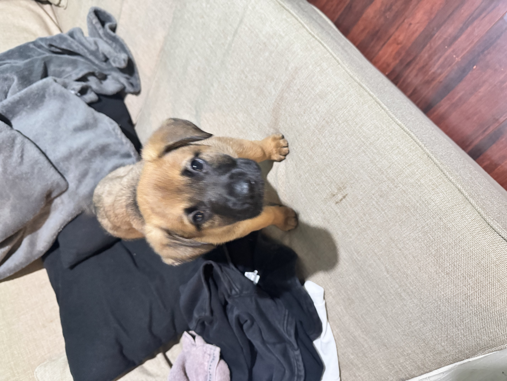
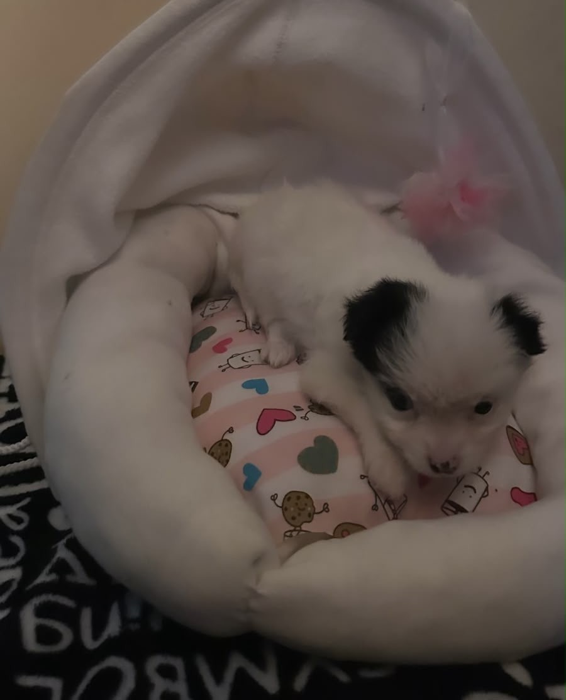

Disponible

Conoce a los peluditos rescatados en nuestra comunidad listos para adopción responsable.



No cuenta con vacunas pero, no es recatada de la calle es donada por familia numeroza.
Iniciar Solicitud